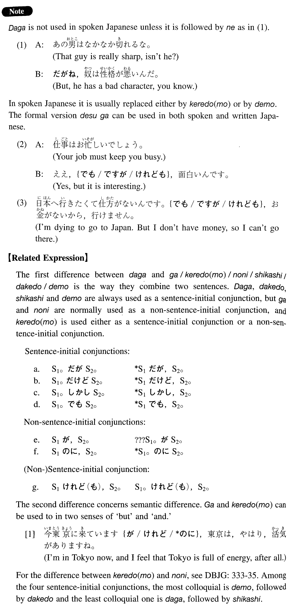

←
DoJG
→
だが
(I. 18)
Example sentences
(ksa).
日本の経済力は伸びている。
だが
、いつまで続くかは分からない。
Japanese economic power is growing, but we can't tell how long it will last.
(ksb).
都会の生活は便利だ。
だが
、ストレスが多すぎる。
Urban life is convenient. But there are too many stresses.
(a).
私は彼女とは初めて会った。
だが
、前から知っていたような親しみを感じた。
I met her for the first time; but I felt close to her as if I had known her for a long time.
(b).
山本は医者に何度も煙草を辞めるように言われた。
だが
、辞める気はないらしい。
Yamamoto was told by his doctor to quit smoking, but he doesn't seem to have any intention of quitting.
(c).
あの人には才能がある。
だが
、その才能を使っていない。
He is talented, but he is not using his talents.
(d).
今日の試験のために寝ないで勉強した。
だが
、さっぱり出来なかった。
I studied hard for today's exam without sleeping, but I couldn't do it at all.
(e).
妹はよく勉強するし、頭もいい。
だが
、成績はなぜかよくない。
My younger sister studies hard and she is intelligent, but somehow her grades are not good.
Formation
S1 informal
だが
、
S2 informal
あの人の話は面白い。
だが
、内容がない。
His talk is interesting, but there is no content
